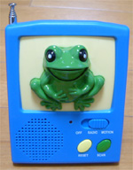
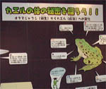
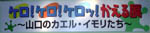
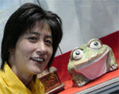
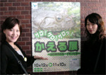
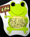
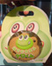
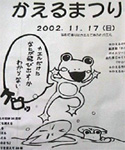
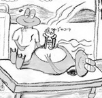

ラジオがしゃべるとカエルが語る！ 【熊本発のんたん同志記者】今回のカエルネタは添付のラジオです。ラジオの音にあわせ、カエルの口がパクパク動きます。そう、まるでカエルが喋っているかのごとく！お値段も1800円と格安です。入院中の父に貸してあげれば、退院の日が早まるかな？？
のんたん様直筆署名@ @ (----) ((_ _)) ~~ ~~ 全国のラジオをカエルラジオに！【全国かえる奉賛会】次々とレアなカエルグッズを紹介してくれる、熊本のんたんから、またもすごいカエルグッズが紹介されたのでありまする。これいいよねー。どんな重大ニュースもカエルが口パクしてくれるなんて。すごすぎいいい。ほしいものであるうう。国営放送局は、ただちに推奨受信機として認定しようではないかあああああ。
下関市立しものせき水族館 海響館で「かえる展」！ 【山口発海響館なかのっち同志記者】１０月１２日（土）から「かえる展」を開催しています。
 生物の飼育にも試行錯誤しながら，採集にも出かけ，山口県の両生類として，無尾目１２種・有尾目４種を展示しております。ただブチサンショウウオだけは採集することができず，いろんな方に声をかけてさがしてもらったのですが，手に入らなかったので，標本を展示しております。子供にも分かりやすい展示を心がけ，お客様が参加できるよう，カエルクイズをしたり，ヘッドホンで鳴き声が聞けるよう工夫しました。海響館  カエルのおかれている現状にもスポットを当て，環境問題にもふれました。来館者の方に好評で，カエルにこんなに種類があるなんて思わなかったや勉強になりましたなど感想をいただいております。機会がありましたら一度お越し下さい。
海響館で「かえる展」に行って来たああああ！  【全国かえる奉賛会】大王も、カエル展に、いってきましたあああ。３日に。ぴのこ同志、すみちゃん同志とともに、下関に出撃し、熱血のカエル海響館なかのっち同志の案内で、海響館にでかけたのでありまするううう。すごいのなんのて、下関のインターに車の行列ができるほどの、大入り満員でした。やっぱ、カエルをテーマに企画すると、なんでも大当たりという神話はほんとうだったんだああああ。海響館  カエル展は、大人から子供まで楽しめるんで、すごいにぎわいでした。夕方には、両親と帰宅する子供が海響館の出口で『もういっぺん、かえるさんとこに、いこうよおおおおおおおおおおおお！』とだだをこねていましたな。
カエルで盛り上げる素晴らしい水族館。海響館にみんなもでかけようではないかあああああああ。海響館
売店コーナーには、海響館特製のカエルサブレまで発売されていてびっくりしたぞおお。
日本のへそ松本市で「第１回 かえるまつり」！ 【長野発カエル寮のSachi同志記者】日本のへそ（？）長野県 松本市で「第１回 かえるまつり」が行われます。１１月１７日（日）場所は、ＪＲ松本駅から 徒歩１５分。カエル大明神のある 「なわて通り」です。実は 今回、おまつりの実行委員になりました。なにしろ「かえる好きの実行委員 募集！」と新聞で見てしまったので もういてもたってもいられなかった(^^ゞそれで ネットのお知らせ係になりました。 当日はハロウィンならぬ「ケロウィン」、かえるレース、「ほっと一息 生き返る カエルルーム」、「かえる写真展（Sachiも写真提供します）」、「かえる自由市場」などなどイベント盛りだくさん。 かえるグッズ・コレクターの高山ビッキさんとお姉さんのコレクションの一部（といっても２００点！）の展示販売、それから京都の 鈴木松風堂のかえるキャラクターの作者 藤本美千子さんの「かえるの語り絵」プレゼントもあります。
すすむてつろう様のカエル新作！ 【鹿児島発すすむてつろう様】カエルのイラストができたのでお送りいたします。健康の秋ですから。大王様もお身体に御気をつけられてすこやかにお過ごし下さるようにとお祈り申し上げます。すすむてつろう
【げこげこ大王返信】すすむてつろう様、新作ありがとうございます。絵をクリックしたら、拡大表示されますので、みなさんもお楽しみください。いつもナイスな絵をありがとうでごわす。
投稿採用者に武功カエル徽章を授与！ |


かえる古新聞過去に取り上げた記事を見出し付きで一覧したい人は、ここをクリック◆創刊号を見る◆先週号を見る◆話題の号を見る◆かえる新聞の昔を読む
|
私も入っています。。全国かえる奉賛会
大王様に会うには、このバナーをクリック。ずっと奥に写真館があるぞ。全国かえる奉賛会に入会するには、自分のホームページのどこかに、下の部分を追加するとバナーがリンク付きで表示されるぞ。どんどん入会しましょー |


|